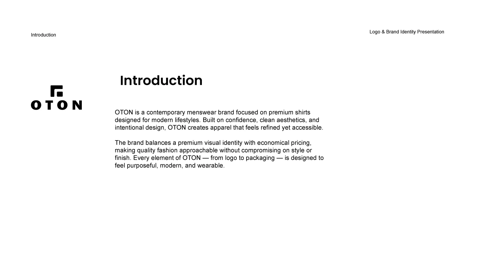
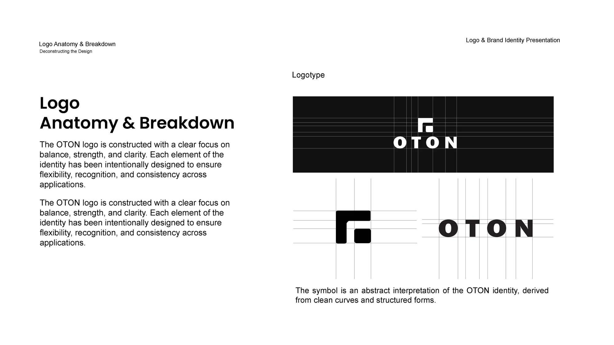
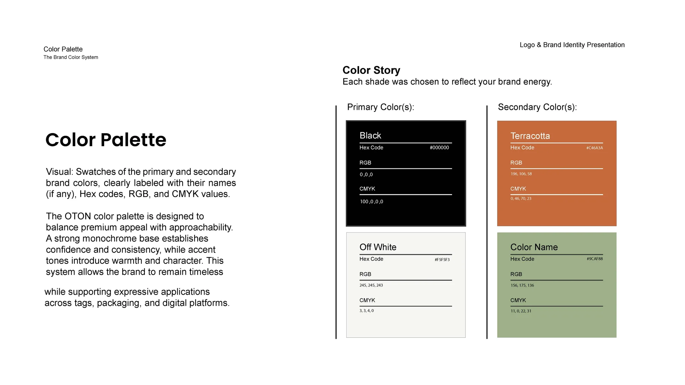
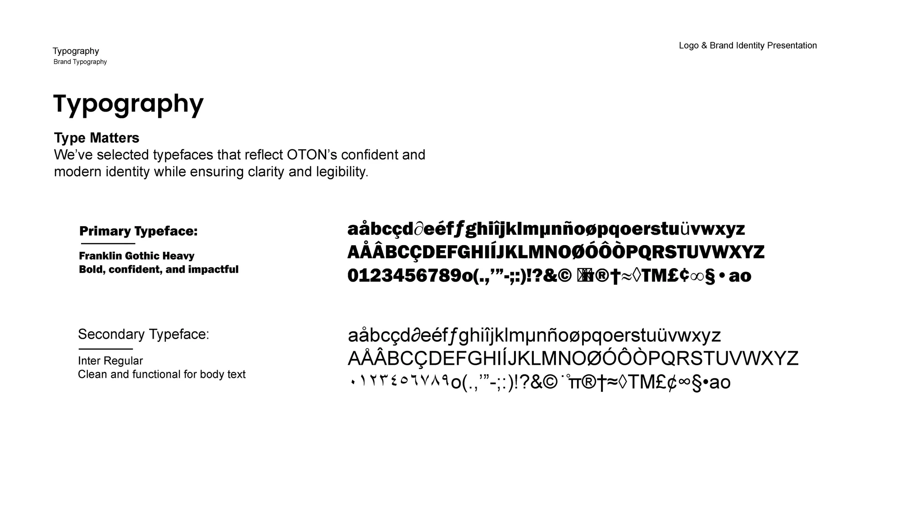
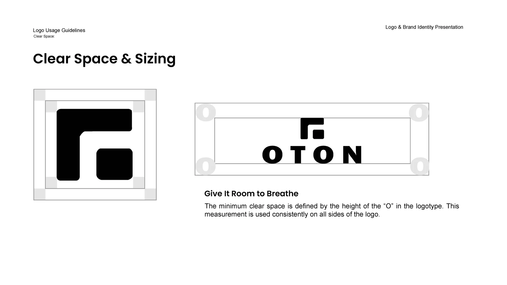
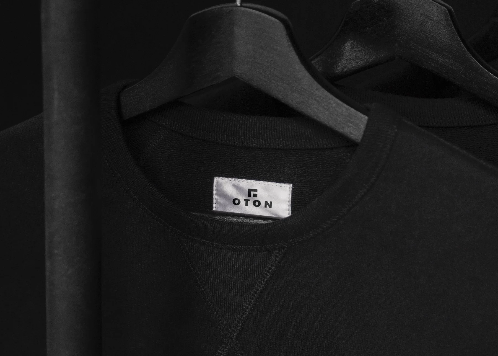
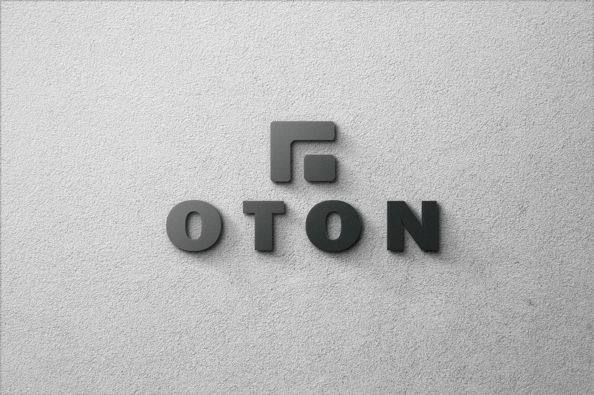

OTON
Brand identity · Client project
OTON
A contemporary menswear brand for premium shirts. The identity balances a premium look with economical pricing, so the clothes feel refined and still reachable.

OTON
Brand identity · Client project
A contemporary menswear brand for premium shirts. The identity balances a premium look with economical pricing, so the clothes feel refined and still reachable.
01 — The brand
OTON is built on confidence, clean aesthetics and intentional design. Every element, from logo to packaging, should feel purposeful, modern and wearable.
The brief was a menswear label that looks premium without pricing like it. That meant a restrained system: a strong mark, a monochrome base, and one warm accent to keep it human.

02 — The logo
The OTON logo is constructed for balance, strength and clarity. The symbol is an abstract interpretation of the brand, drawn from clean curves and structured forms.

A compact, structured form that stands alone on a clothing label.
Wide-set capitals, built for clarity and recognition at small sizes.
Flexible enough to stack, lock up or use alone, consistent everywhere.
03 — Colour and type
A strong monochrome base sets confidence and consistency. Terracotta and a soft green add warmth and character to tags, packaging and digital.


04 — Usage
Clear space is set by the height of the "O" in the logotype, and applied the same way on every side of the logo.

One measurement, used everywhere, keeps the mark clean on a label, a bag or a storefront. It is the simplest rule in the system and the one that does the most work.
05 — Applications
The identity in use: a woven neck label, shopping bags in the brand colours, and the logo as a dimensional wall sign.


That was OTON
Next, Riyasat: a full identity for a heritage hospitality brand.